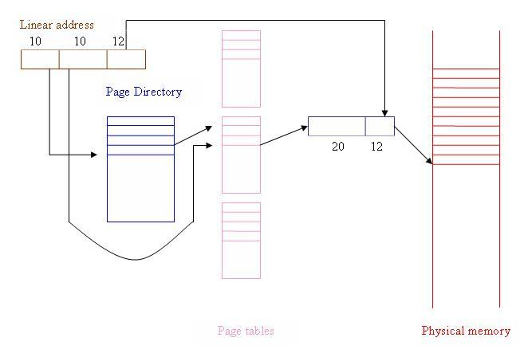

Lecture-27
Operating Systems (CS330)
There are two segment tables - an LDT (Local Descriptor Table) per process, and a system wide GDT (Global Descriptor Table). Each GDT or LDT entry (called a segment descriptor) contains the 32 bit starting linear address for the segment and its size. Each descriptor also contains a privilege level that indicates the processor modes in which this segment can be used, as well as modes (read, write, execute) in which the segment can be accessed. The value in a segment register identifies both a descriptor table (GDT or LDT) and the specific descriptor within this table.
Linear to Physical Address Translation
As mentioned above, the translation of linear to physical addresses is performed using a 2-level paging scheme. The 10 most significant bits in the linear address are used as index into the first level page table (called the page directory), the next 10 bits are used as index into the second level page table, and the least significant 12 bits are used as offset within the page. Thus the page size is 4KB. This translation process is illustrated by the figure below.
Back to ContentsThe essential idea of demand paging is that not all accessible pages of the virtual address space of a process need to be in physical memory at all times. Some pages may be "paged out" i.e., they are stored on a swap device rather than in memory. The valid bit for such pages (in the corresponding page table entries) would be 0. For such pages, the page table entry can store the disk address of the page instead of the physical frame number. If the process tries to access such a page, a page fault exception occurs (since the valid bit is 0) and the exception handler needs to bring in the page from disk to memory, change the page table entry accordingly, and restart the instruction.
Demand paging allows the operating system to make more efficient use of memory by storing some pages that are not expected to be used soon in a swap device (usually a disk partition dedicated for this use). Note that this is conceptually like extending the memory hierarchy (L1 cache, L2 cache, main memory) to yet another level (disk). Essentially the main memory is being used as a cache of recently used data from the next level of the memory hierarchy (the swap device, i.e., the disk, which is slower but bigger). The difference of course is that this level of the memory hierarchy is implemented entirely in the software.
Back to ContentsAlso note that in step 3(i) above, the victim frame needs to be written to the disk only if it is ``dirty'' i.e., it has been modified since it was last read from the disk. Most hardware implementations support this optimization using a dirty bit in the page table entries that is set whenever the page is modified. When the page is brought into memory from the disk, the OS clears this bit. If the hardware does not support the dirty bit, it can be simulated by the OS (at some cost obviously) by using the protection bits. The idea is that the OS can deny the write permission for a writeable page. When a process attempts to write to the page, the hardware generates a protection fault. The fault handler determines whether the process is actually permitted to write to the page and if yes, marks it dirty and enables the write permission.
Page fault handling requires information about: